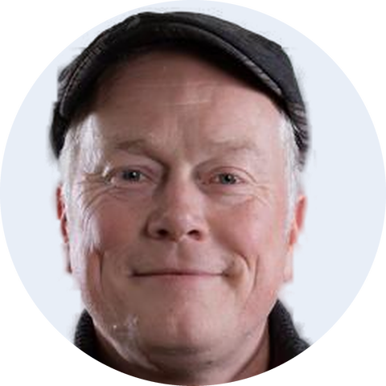
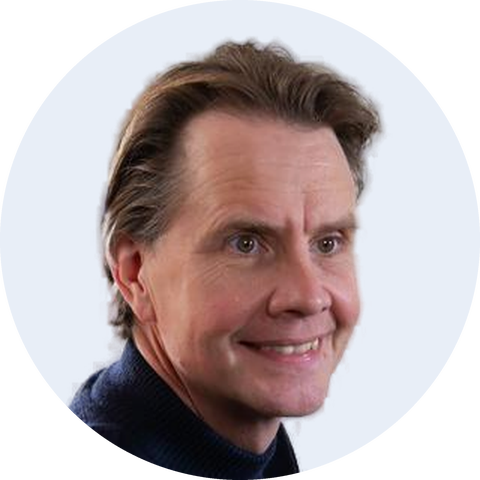

Het antwoord komt van ons.
Het wetsvoorstel ligt bij de Tweede Kamer (Kamerstuk 36912). Een startdatum is nog niet vastgesteld; 1 januari 2030 is op zijn vroegst. De premie wordt 5,4% van de winst, met een maximum.
1zelfstandigondernemers.nlVan zoekresultaat
naar bron
Zzp'ers stellen hun vragen over AOV, broodfonds en pensioen steeds vaker aan ChatGPT en Google AI. Dit plan maakt de kennisbank van Zelfstandig Ondernemers de bron die die antwoorden noemt en citeert. In vier onderdelen, met een vast team van drie.
ChatGPT, Perplexity, Copilot
zoekwoordonderzoek en eerste artikelen
2 redacteuren
Flii Media
Onderbouwing
Wat onderzoek laat zien over welke pagina's AI-antwoorden citeren, waar de kennisbank nu staat, en waarom Zelfstandig Ondernemers grote kans maakt om dé bron te worden.
Uitgangspositie
- De kennisbank telt 50 artikelen zonder indeling in thema's. De meeste zijn 30 tot 250 woorden lang.
- Bij geen enkel artikel staan een auteur, een datum of bronnen. Juist die signalen wegen AI en Google zwaar bij financiële onderwerpen.
- Een deel is verouderd of dubbel. Er staan drie artikelen over de WIA en twee over jaarruimte, en een blog noemt nog 2027 als startjaar van de verplichte AOV.
- Over de eigen producten (schenkkring, pensioen en sparen) gaan maar een paar artikelen.
- Op zoektermen als "verplichte aov", "broodfonds of aov" en "pensioen zzp" staat Zelfstandig Ondernemers niet bovenaan. Daar scoren Knab, De Zaak, Keuze.nl, Unive en ZZP Nederland.
De kans
- De verplichte AOV is onzeker en daardoor veel gezocht. Het wetsvoorstel (Kamerstuk 36912) ligt bij de Tweede Kamer en de startdatum staat nog niet vast. Wie hier actueel en met bronnen over schrijft, wordt de bron die AI noemt.
- Geciteerd worden levert klikken op. Merken die in een AI Overview genoemd worden, krijgen 35% meer organische klikken.
- Het publiek gebruikt AI al. 44,7% van de Nederlanders gebruikt generatieve AI, en Google biedt de AI-modus sinds oktober 2025 in het Nederlands aan.
Onderwerpen en artikel
Zes onderwerpen rond de vragen die zzp'ers echt stellen, met per onderwerp één hoofdpagina en korte artikelen die elk één vraag beantwoorden. Samen ca. 76 nieuwe artikelen in 12 maanden, naast het bijwerken van de bestaande kennisbank.
Verplichte AOV
- Wanneer gaat de verplichte AOV in?
- Wat kost de verplichte AOV bij mijn winst?
Alternatieven voor een AOV
- Wat is een schenkkring en hoe werkt die?
- Broodfonds of AOV: wat past bij mij?
Pensioen en sparen
- Hoeveel moet ik per maand opzij zetten?
- Hoe bereken ik mijn jaarruimte?
Kosten en dekking
- Wat kost een AOV per maand?
- Is de premie of inleg aftrekbaar?
Ziek zonder vangnet
- Ik ben ziek en heb geen AOV, wat nu?
- Heb ik recht op Bbz of IOAZ?
Regels en zekerheid
- Wat verandert er met de Wet DBA?
- Wanneer is een bv slimmer?
Team en werkwijze
Eén researcher en twee redacteuren. De redacteuren lezen elkaars artikelen na; de vakexpert van Zelfstandig Ondernemers levert de citaten.

Researcher
- Brengt vooraf de 20 belangrijkste zoekwoorden in kaart
- Stemt elk artikel af op het zoekwoord zoals AI het opzoekt
- Levert per artikel bronnen en cijfers

Redacteur 1
- Schrijft 3 tot 4 artikelen per maand
- Houdt de verplichte AOV actueel
- Leest de artikelen van redacteur 2 na

Redacteur 2
- Schrijft 3 tot 4 artikelen per maand
- Werkt bestaande artikelen bij
- Leest de artikelen van redacteur 1 na
Vakexpert ZO
- Levert per artikel een citaat
- Staat met naam bij het citaat
Resultaten
Wat we meten, en waar we naartoe werken met bezoekers en aanmeldingen uit chatbots zoals ChatGPT, Perplexity, Copilot en Gemini.
Meten
Hoe vaak, welke pagina's en via welke zoekvragen. Al gekoppeld in het dashboard.
Vertoningen per pagina in AI Overviews en AI-modus.
Bezoekers uit chatbots, tot en met de aanmelding.
- AI-zoekbots toelaten, anders verschijnt de site niet in ChatGPT-antwoorden.
- Tekst direct in de pagina; AI-crawlers lezen geen JavaScript. De site doet dit al goed.